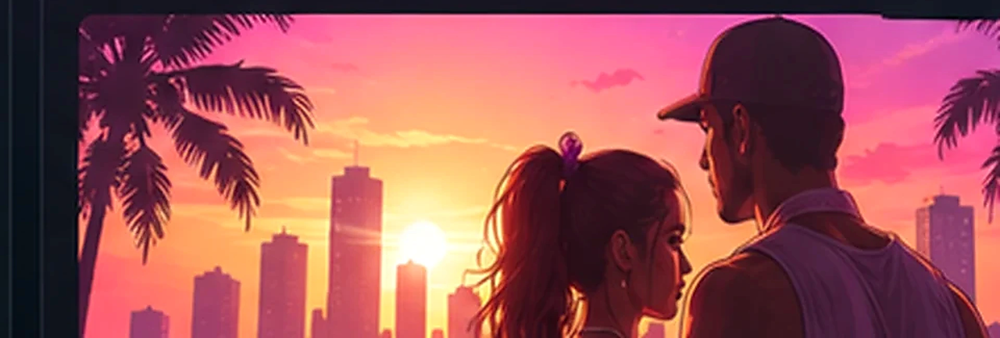
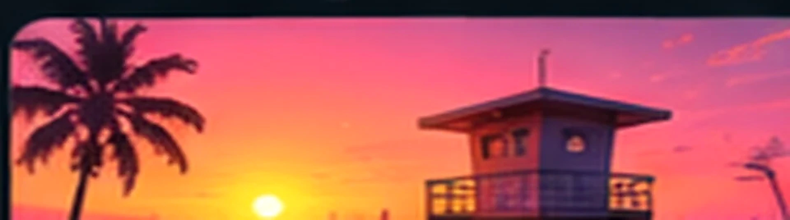
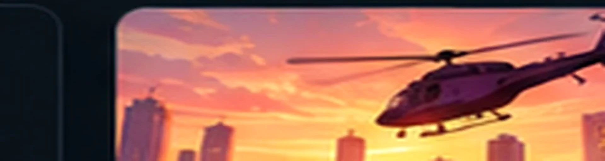
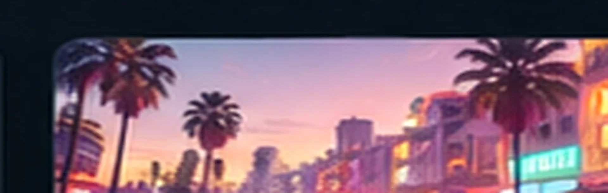

Leonida
Fiktívny štát, v ktorom sa odohráva GTA VI.
Prehľad postáv, miest a sveta Leonidy. Jednotlivé záznamy prepájame so zdrojmi a súvisiacimi článkami.



Ako pracovať s trailermi a oznámeniami bez zbytočných domnienok.

Praktický sprievodca tým, čo považovať za dôkaz a čo iba za zaujímavý nápad.